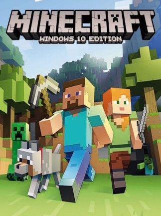

Minecraft
Minecraft es un videojuego de construcción, de tipo «mundo abierto» o sandbox creado originalmente por el sueco Markus Persson (conocido comúnmente como "Notch"), y posteriormente desarrollado por su empresa, Mojang AB. Fue lanzado públicamente el 17 de mayo de 2009, después de diversos cambios fue lanzada su versión completa el 18 de noviembre de 2011.
Un mes antes del lanzamiento de su versión completa, el 18 de octubre de 2011, fue estrenada una versión para Android, y el 17 de noviembre del mismo año fue lanzada la versión para iOS. El 9 de mayo de 2012 fue lanzada la versión del juego para Xbox 360 y PS3. Todas las versiones de Minecraft reciben actualizaciones constantes desde su lanzamiento. El 11 de noviembre de 2014, Minecraft lanzó su edición para el apartado de PlayStation Vita, desarrollada por Mojang y 4J Studios, esta versión presenta las mismas actualizaciones y similares características que las otras versiones de consola; además, cuenta con el sistema de venta cruzada, es decir que al comprar la versión de PlayStation 3 se adquiere también la de PlayStation Vita. A septiembre de 2014 se habían vendido más de 54 millones de copias.
El 15 de septiembre del 2014, fue adquirido por la empresa Microsoft por un valor de 2500 millones USD. Este suceso provocó el alejamiento de Markus Persson de la compañía.El 1 de noviembre de 2016 Microsoft anunció el lanzamiento de la versión completa de Minecraft Education Edition.

Jugabilidad
Minecraft es un juego de mundo abierto, por lo que no posee un objetivo específico, permitiéndole al jugador una gran libertad en cuanto a la elección de su forma de jugar. A pesar de ello, el juego posee un sistema de logros.1213 El modo de juego predeterminado es en primera persona, aunque los jugadores tienen la posibilidad de cambiarlo a tercera persona.14 El juego se centra en la colocación y destrucción de bloques, siendo que este se compone de objetos tridimensionales cúbicos, colocados sobre un patrón de rejilla fija. Estos cubos o bloques representan principalmente distintos elementos de la naturaleza, como tierra, piedra, minerales, troncos, entre otros.15 Los jugadores son libres de desplazarse por su entorno y modificarlo mediante la creación, recolección y transporte de los bloques que componen al juego, los cuales solo pueden ser colocados respetando la rejilla fija del juego.